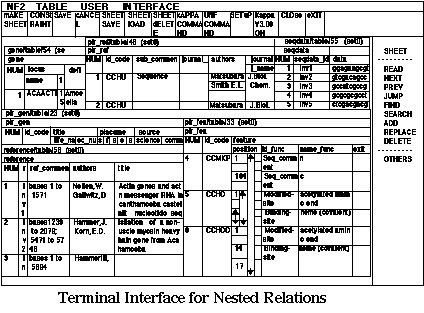

(12) Nested Relational Database Management System: Kappa-II
Machine: PSI
Environment: SIMPOS
Language: ESP
Source Code: 12 MB
Documents: None
Overview
Kappa-P is a database management system based on a nested relational
model.
Features
- Nested Relational Model
- In order to treat complex structured data efficiently, a nested
relational model is adopted.
- Terminal Interface for Nested Relations
- A Terminal interface is provided to manipulate nested relations
directory on a display, it is customizable for various applications.

FTP
- Nested Relational Database Management System: Kappa-II [5,711K]

- Nested Relational Database Management System: Kappa-II(data1)
[5,332K]
- Nested Relational Database Management System: Kappa-II(data2)
[4,857K]
- Nested Relational Database Management System: Kappa-II(data3)
[9,995K]
www-admin@icot.or.jp